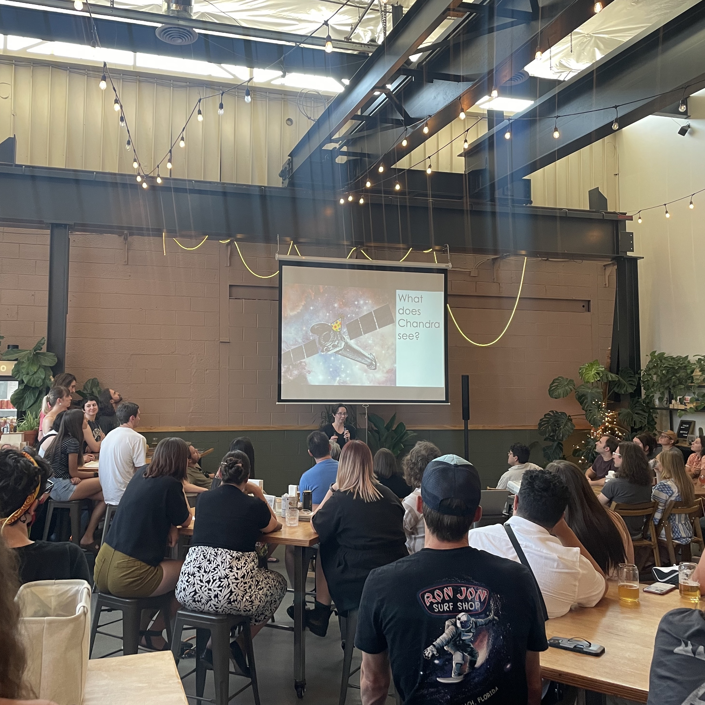
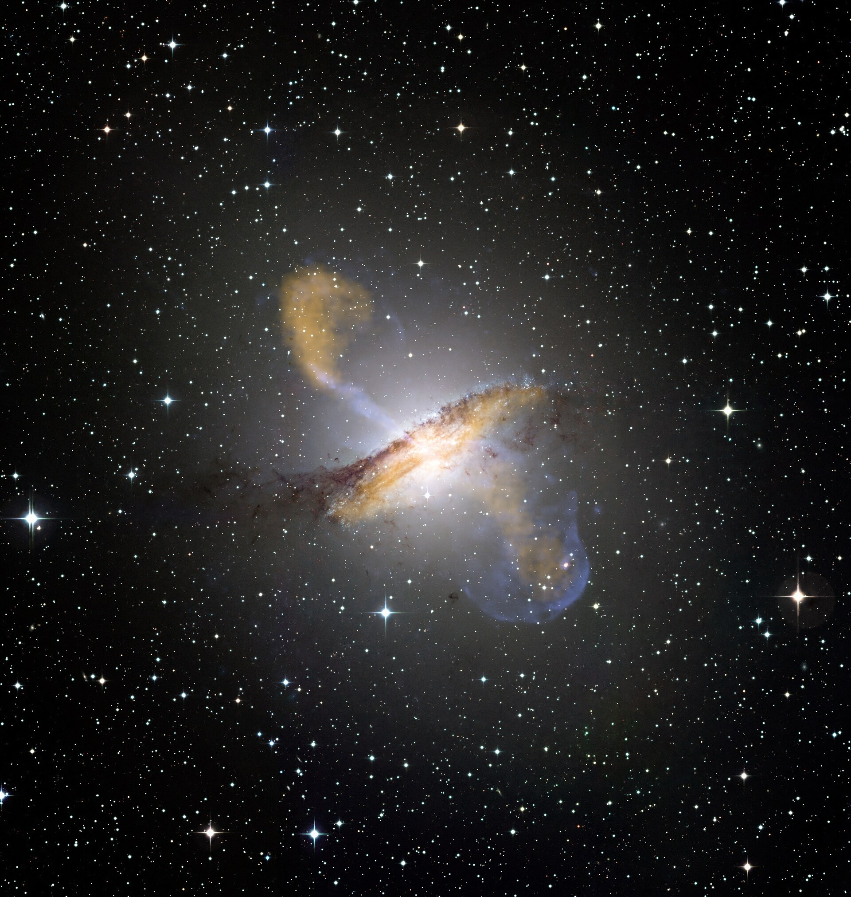
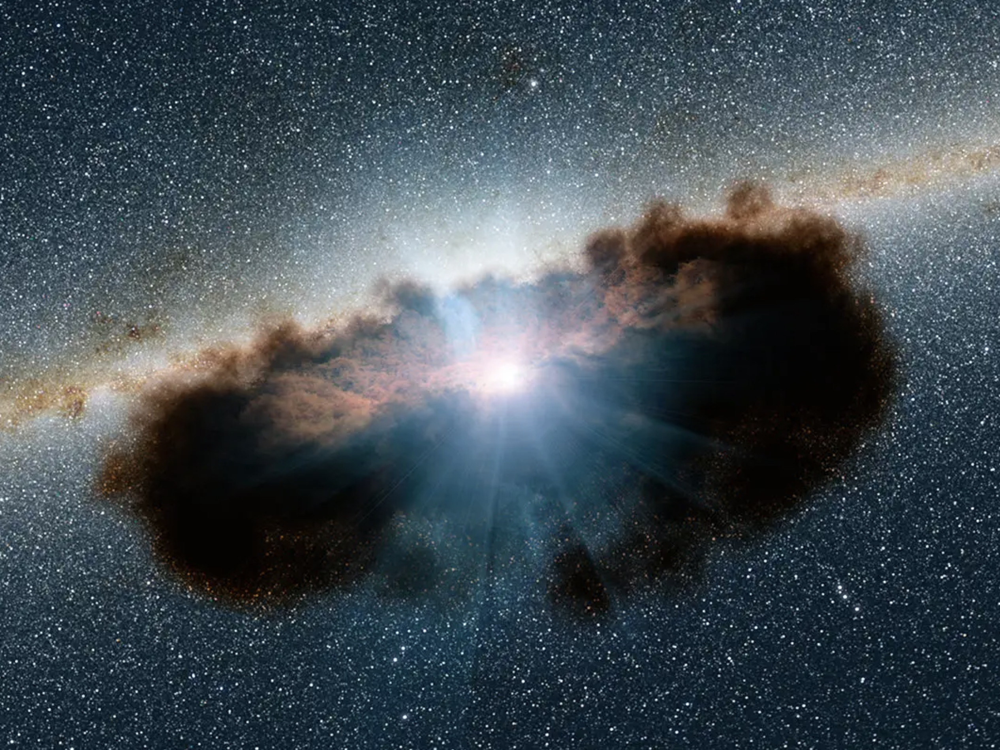
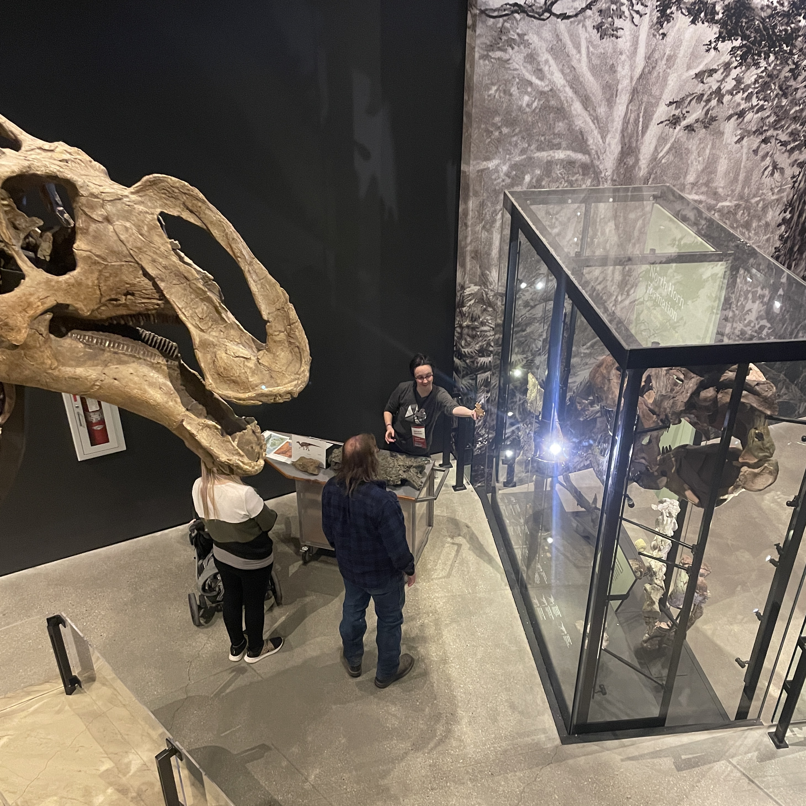
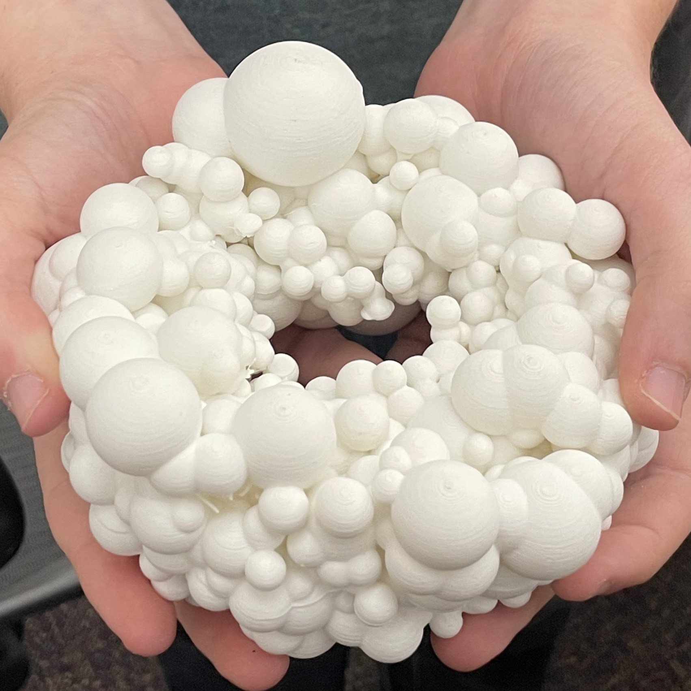
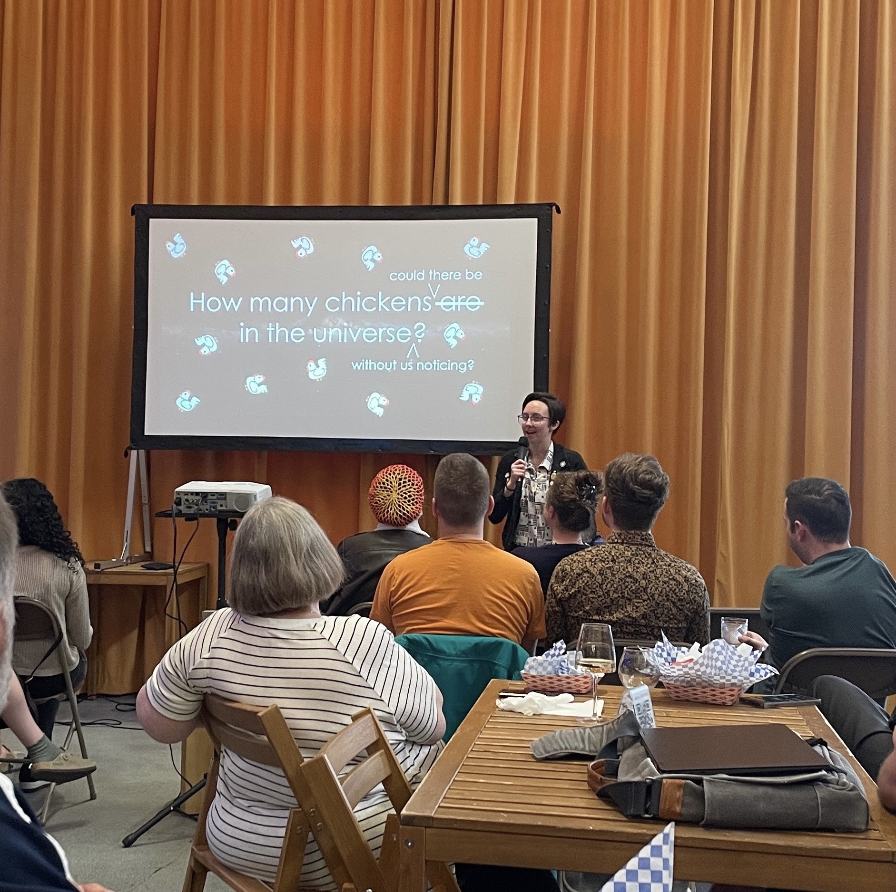
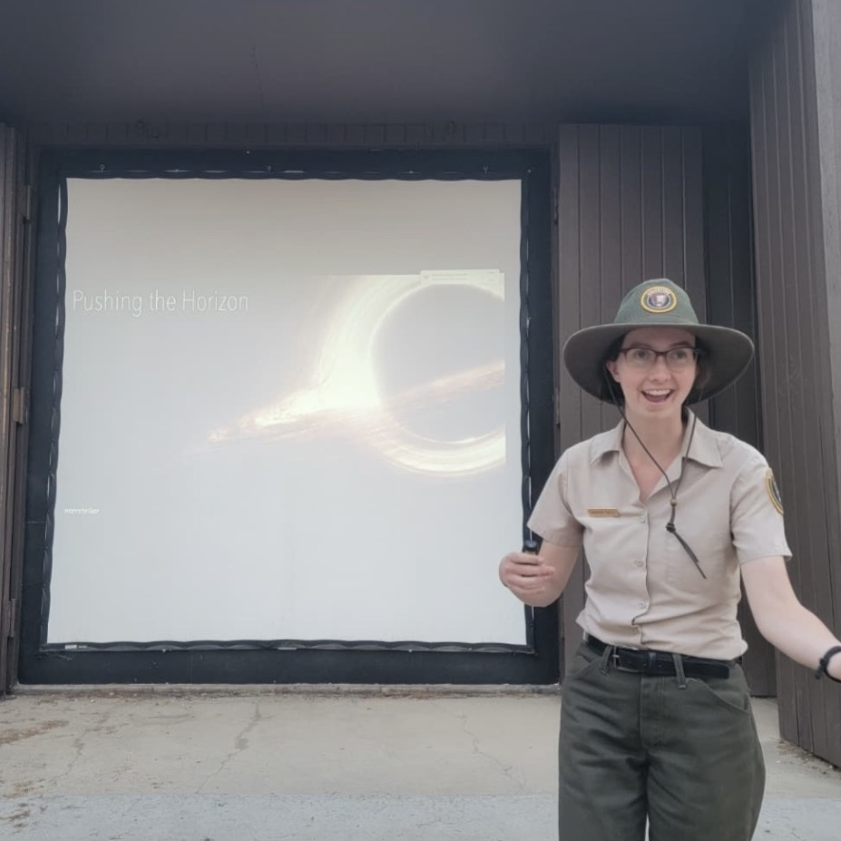
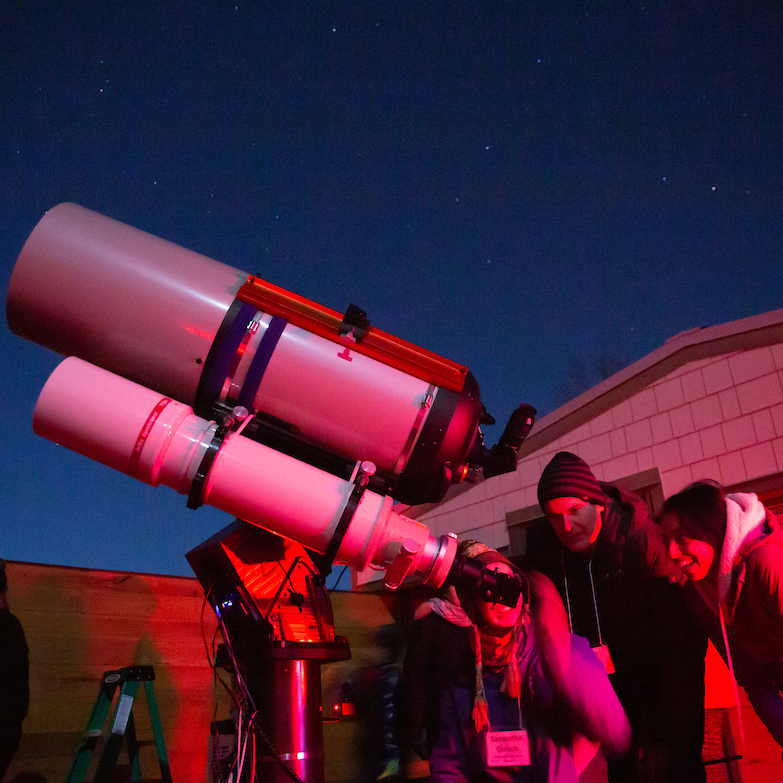

Astronomy on Tap
An Astronomy on Tap talk celebrating the 25th anniversary of the Chandra X-ray observatory.
Supermassive black holes (SMBHs) live at the centers of nearly every galaxy in the universe. When material falls onto the SMBH and triggers phases of growth---a process called accretion---the gasses heat up to millions of degrees and becomes luminous across the electromagnetic spectrum. These actively growing SMBHs are classified as Active Galactic Nuclei (AGN).

I am most interested in the quest to unravel the connection between SMBH and galaxy growth, which can be done, in part, by studying the properties of AGN populations.
The Circumnuclear Region: the immediate surroundings of the black hole is referred to as the circumnuclear region, which is home to the accretion processes that drive SMBH growth. X-ray spectroscopy probes the material within this environment, including the dusty "torus" (pictured to the right).
Extragalactic Surveys: By analyzing deep surveys of AGN in the X-ray band, we can place observational constraints on the population synthesis models that describe the cosmic accretion history of SMBHs.
AGN in the Time Domain: in the X-ray band, AGN variability encodes information about the accretion processes that drive SMBH growth, as well as the geometry obscuring material in the circumnuclear region (i.e. the dusty torus).

Creech S, Civano S, Wik D. et al. PEARLS: NuSTAR and XMM-Newton Extragalactic Survey of the JWST North Ecliptic Pole Time-Domain Field V: Unraveling X-ray Spectral Variability. Submitted to the Astrophysical Journal.
Creech S, Civano S, Wik D. et al. The NH Distribution of Hard X-ray Selected AGN in the NEP Field. The Astrophysical Journal, 2025. arXiv:2510.26554
Creech S, Wik D, et al. The NuSTAR View of Perseus: the ICM and a Peculiar Hard Excess. The Astrophysical Journal, 2024. arXiv:2401.16616

From teaching university-level astronomy to leading constellation tours in a National Park, I've had the pleasure of performing many teaching and outreach roles in my communities. Examples from my teaching and outreach are shown in the gallery below.

An Astronomy on Tap talk celebrating the 25th anniversary of the Chandra X-ray observatory.

In addition to giving a public programs on my research as a NHMU science communication fellow, I took a break from astronomy on the weekends to teach visitors about dinosaurs.

A 3D print I created using Johannes Buchner's UXCLUMPY model of the dusty torus (Buchner et al. 2019). If you are interested in using this model for outreach, let me know!

An April Fool's Astronomy on Tap talk detailing some extremely important work.

As a dark sky intern at BCNP, I led constellation tours and gave a weekly ranger talk to park visitors.

In my undergraduate days, I worked for three years as a docent for UNCA's Lookout Observatory.